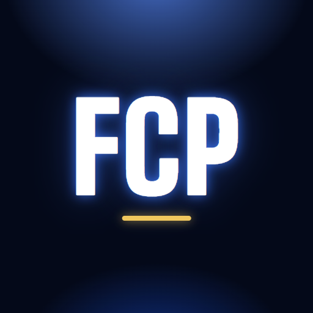

Pas de connexion
FC Porto Wiki a besoin d'internet au premier lancement. Ensuite, les pages déjà consultées restent disponibles hors ligne.
Appuie sur F5 pour réessayer, l'app réessaie aussi toute seule.
FC Porto Wiki a besoin d'internet au premier lancement. Ensuite, les pages déjà consultées restent disponibles hors ligne.
Appuie sur F5 pour réessayer, l'app réessaie aussi toute seule.